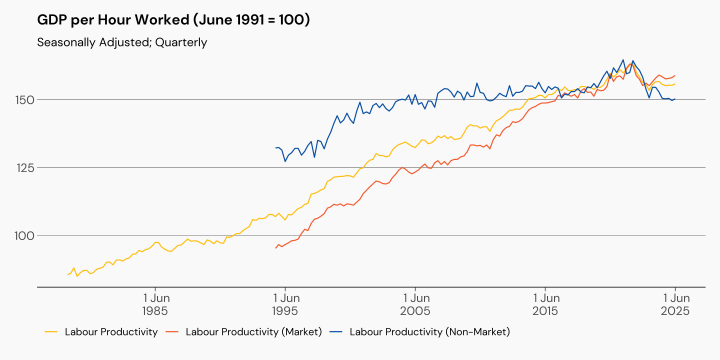
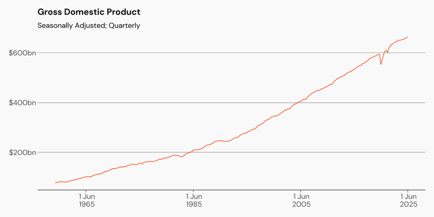
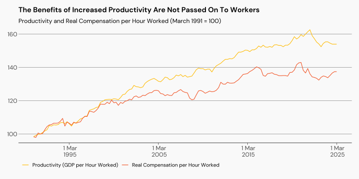
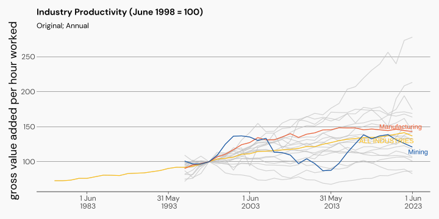

Organiser Essentials
Productivity
Organiser Essentials
These sessions are designed to help build a culture of mindful militancy.
Tell us what you need.
Talking about Productivity
Why do you need to understand productivity?
What is productivity, and what is it not?
What factors affect trends in productivity?
Talking about productivity in the workplace
Productivity
Productivity
Productivity (or, output per hour worked)
- Labour Productivity is a measure of Gross Domestic Product per hour worked.
- But there are other inputs into production besides labour, including capital
- Changes in output can occur even without changes to input
Measuring Productivity
- It is relatively easy to measure and describe output per worker.
- Measuring output per unit of labour and capital is much more complicated, and questionable.
- What is a unit of labour-capital?
- You should be sceptical of people (especially economists) who talk about productivity in the non-market sector.
Productivity Trends
Productivity Trends
Hours Worked
GDP
Workers Share
- If productivity is a measure of output per hour, it would only be fair to compare that with how much compensation (in real terms) workers are getting per hour.
Workers Share
Industry Productivity
What Productivity is Not
- The amount it costs to produce one unit of output
- Consistent across market and non-market sectors
- Tied to real wages
Productivity and Management
Productivity is primarily determined by:
Physical capital like tools, and machines
Technology and innovation
Management of resources
The health and skills of workers
Productivity and Public Policy
What policy levers can be used to increase productivity?
Worker health
Skills
Investment
Environmental regulation
Managerial practices
Productivity in the Workplace
Productivity in the Workplace
They say:
Unions need to moderate their wage claims, and offer measures to improve labour productivity.
- Who makes decisions that impact on labour productivity? Workers or Bosses?
Productivity in the Workplace - Health
- Are workers earning enough to live without constant stress?
- Are workplace health and safety risks properly addressed?
- Do workers have sufficient time to rest and recover?
Productivity in the Workplace - Skills
Are workers given opportunities to develop their skills and advance their careers?
Does the company cover training costs? Or offer time off?
Are there incentives to train?
Productivity in the Workplace - Investment
Is the company investing in physical capital and research?
Are workers provided with the tools and materials they need to be productive?
Productivity in the Workplace - Management
Is time wasted on non-value adding tasks?
Can workers raise and resolve issues with management?
Are workers deployed effectively?
Productivity in the Workplace
Productivity in the workplace is shaped by the choices companies make
Companies can be profitable without being productive.
Workers need to be able to discuss productivity openly so they can challenge misleading claims.
The NRC is Here to Help
Please reach out if you need any help
Contact us on nrc@amwu.org.au